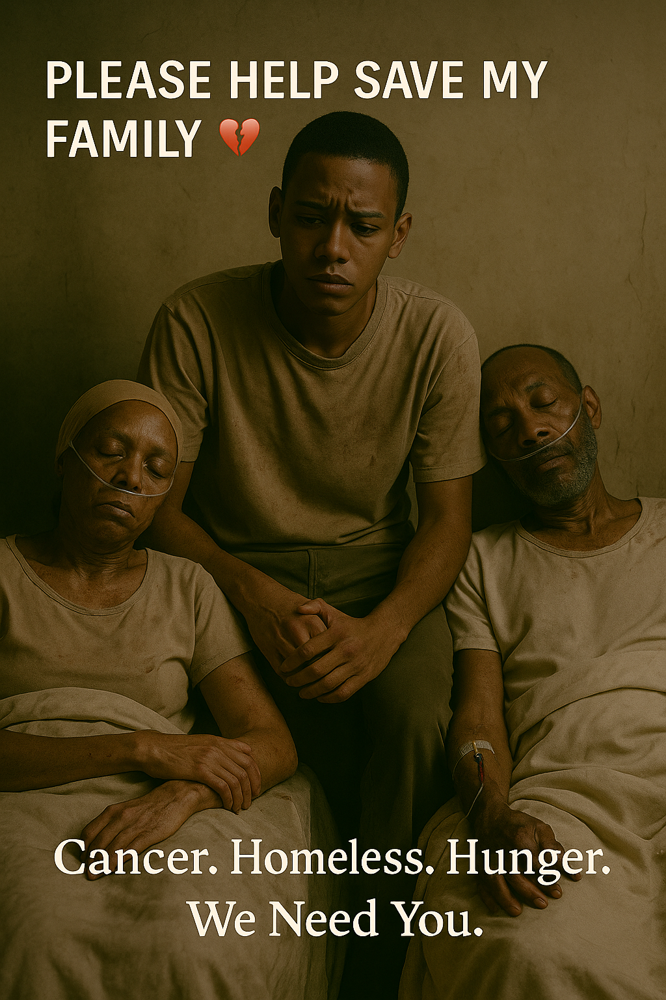

<!DOCTYPE html>
<html lang="rw">
<head> 
 <!-- Google tag (gtag.js) -->
<script async src="https://www.googletagmanager.com/gtag/js?id=G-19D43NZ12R"></script>
<script>
  window.dataLayer = window.dataLayer || [];
  function gtag(){dataLayer.push(arguments);}
  gtag('js', new Date());
  gtag('config', 'G-19D43NZ12R');
</script>
  <meta charset="UTF-8" />
  <meta name="viewport" content="width=device-width, initial-scale=1.0" />
  <title>Umwana w'imyaka 15 wabuze aho aba Afite Ababyeyi Barwaye Kanseri akeneye Ubufasha</title>
  <style>
    body {
      font-family: Arial, sans-serif;
      background-color: #f7f7f7;
      margin: 0;
      padding: 20px;
      color: #333;
      line-height: 1.6;
    }
    .container {
      max-width: 800px;
      margin: auto;
      background: #fff;
      padding: 30px;
      box-shadow: 0 0 10px rgba(0,0,0,0.1);
      border-radius: 10px;
    }
    h1, h2 {
      color: #00509e;
    }
    .donate {
      margin-top: 20px;
      padding: 15px;
      background: #e0f7fa;
      border-left: 5px solid #00796b;
    }
    a {
      color: #00796b;
    }
    .share-buttons {
      margin-top: 30px;
      display: flex;
      gap: 10px;
      flex-wrap: wrap;
    }
    .share-buttons a {
      padding: 10px 15px;
      background-color: #00509e;
      color: white;
      border-radius: 5px;
      text-decoration: none;
    }
    .lang-switcher {
      margin-top: 20px;
      text-align: right;
    }
    .lang-switcher button {
      margin-left: 10px;
      padding: 5px 10px;
      background-color: #ccc;
      border: none;
      border-radius: 5px;
      cursor: pointer;
    }
    .header-image {
      width: 100%;
      max-height: 300px;
      object-fit: cover;
      border-radius: 10px;
      margin-bottom: 20px;
    }
  </style>
  <script>
 function switchLang(lang) {
  const base = "https://jeanpaul202.github.io/hope-seeker/";
  if (lang === 'en') {
    window.location.href = base + "index.html";
  } else {
    window.location.href = base + lang + ".html";
  }
}
 ipt>
</head>
<body>
  <div class="container">
    <div class="lang-switcher">
      <button onclick="switchLang('en')">English</button>
      <button onclick="switchLang('rw')">Kinyarwanda</button>
      <button onclick="switchLang('fr')">Français</button>
    </div>

    

    <h1>Umwana w'imyaka 15 wabuze aho aba, witaho ababyeyi be barwaye kanseri, akeneye ubufasha bwawe</h1>

    <p>Bavandimwe, bashiki banjye,<br>
    Babyeyi bacu,</p>

    <p>Niba uri gusoma ubu butumwa, ndagusaba umutima wawe w'impuhwe ngo utambutse ntacyo udufasha. Nizeye byimazeyo ko ubuntu bwawe bushobora guhindura ubuzima bwacu kandi Imana ibibona ikabihindura umugisha.</p>

    <h2>Nditwa Yohani</h2>
    <p>Mfite imyaka 15, ndi umwana mukuru mu bana batatu. Ndi umwana, ariko mfite inshingano zikomeye kurusha imyaka yanjye. Uyu munsi ndandika mbabwira iby'ububabare n'icyizere, nizeye ko hari umuntu azumva ubusabe bwacu akadufasha.</p>

    <h2>Umuryango wanjye urahangayitse</h2>
    <p>Ababyeyi banjye bombi, <strong>Jessica</strong> na <strong>Francisco</strong>, barwaye kanseri. Ibi byatumye dutakaza byose. Amafaranga yose twari dufite yagiye, n’inguzanyo zose twafashe zikoreshwa, ndetse ubu twatakaje inzu yacu. Banki yafashe inzu kuko tutashoboraga kwishyura imyenda y'ubuvuzi.</p>

    <p>Ubu turi mu mihanda, turarara aho dushobora. Rimwe na rimwe turara dufite inzara. Hari n’igihe turara ku butaka, turwaye kandi dukonje.</p>

    <h2>Abavandimwe banjye bavanywe ku ishuri</h2>
    <p>Kuko tudashobora kwishyura amafaranga y’ishuri, abavandimwe banjye bato barahagaritswe. Ntibumva impamvu ubuzima bwabo buhindutse. Ngerageza kubashimisha ariko nanjye ndi mu gahinda. Ndi umurezi wabo ubu, kandi umutwaro urakomeye.</p>

    <h2>Mfite imyaka 15 gusa, ariko ngomba kwitwara nk’umubyeyi</h2>
    <p>Ndakaraba, ndatunganya amafunguro, nita ku babyeyi banjye barwaye, kandi ngerageza guha abavandimwe banjye icyizere. Hari iminsi numva mbabaye cyane, none ubu ndabinginze mw’isi yose ngo mutubere hafi, mbifashijwemo n’umutima wuzuye amarira.</p>

    <h2>Icyo nsaba</h2>
    <p>Ndakwinginze ngo ugire icyo utanga kigera kuri <strong>$3,000</strong> kugira ngo:</p>
    <ul>
      <li>Twishyure ubuvuzi bw’ababyeyi banjye</li>
      <li>Tugure ibiribwa n’ibikoresho by’ibanze byo kubaho</li>
      <li>Abavandimwe banjye basubire ku ishuri</li>
      <li>Tubonere aho kuba hafite umutekano</li>
    </ul>

    <div class="donate">
      <h2>Uko ushobora gufasha</h2>
      <p><strong>PayPal:</strong> <a href="https://paypal.me/dimezotest" target="_blank">https://paypal.me/dimezotest</a></p>
      <p><strong>Bitcoin Wallet:</strong> <a href="https://www.blockchain.com/btc/address/bc1qlq76mxmu03sv07a7g0548xdtck9w8lsn4fzqhq" target="_blank">bc1qlq76mxmu03sv07a7g0548xdtck9w8lsn4fzqhq</a></p>
      <p><strong>Email yo kuvugana:</strong> <a href="mailto:jeanpaulartistl@gmail.com">jeanpaulartistl@gmail.com</a></p>
    </div>

    <h2>Imana iguhe umugisha</h2> <h2>Niba wifuza kuvugana nanjye byihariye</h2>
<p>
  Ndasobanukiwe neza ko gutanga inkunga kuri internet rimwe na rimwe bishobora guteranya cyangwa gutera gushidikanya. Wenda waba wifuza kumbaza ikibazo, kumenya byinshi kuri iyi nkuru, cyangwa kugenzura niba ari inkuru y’ukuri. Ndabyumva neza kandi mbifata nk’ukuri.
</p>
<p>
  Ni yo mpamvu nshyizeho uburyo ushobora kunyegera byoroshye unyuze kuri WhatsApp. Nubwo ndi umwana muto, ndakwinginze uzanyandikire, nzagusubiza mu kuri no mu bwiyoroshye. Ubutumwa bwawe — n’iyo bwaba bugufi — bushobora kugira icyo buhindura ku buzima bwacu.
</p>
<p>
  Ntutinye <strong>kugira icyo umbwira</strong> — wambwira igitekerezo cyawe, ikifuzo, cyangwa ijambo ry’ihumure. Ndi hano, kandi nditeguye kukumva.
</p>
<p><strong>WhatsApp:</strong> <a href="https://wa.me/250783964106" target="_blank">Vugana nanjye kuri WhatsApp</a></p>

    <p>Ku bantu bose bagize umutima wo kudufasha — mbashimiye byimazeyo. Imana ibahe umugisha wose ku bw'impuhwe yanyu. Umunsi umwe nizeye ko nanjye nzabona uko mfasha abandi nk’uko mumpaye ubu.</p>

    <p><em>Mbifurije urukundo n’icyizere,<br>Yohani<br>Imyaka 15<br>Ubu ndi mu nzira, ariko ntacyo ntakora</em></p>

    <div class="share-buttons">
      <a href="https://www.facebook.com/sharer/sharer.php?u=https://jeanpaul202.github.io/hope-seeker/rw.html" target="_blank">Sangiza kuri Facebook</a>
      <a href="https://wa.me/?text=https://jeanpaul202.github.io/hope-seeker/rw.html" target="_blank">Sangiza kuri WhatsApp</a>
      <a href="https://twitter.com/intent/tweet?url=https://jeanpaul202.github.io/hope-seeker/rw.html&text=Ndakwinginze ufasha uyu mwana w'imyaka 15 gukiza umuryango we" target="_blank">Sangiza kuri Twitter</a>
      <a href="https://www.instagram.com/" target="_blank">Sangiza kuri Instagram</a>
    </div>
  </div>
</body>
</html>
